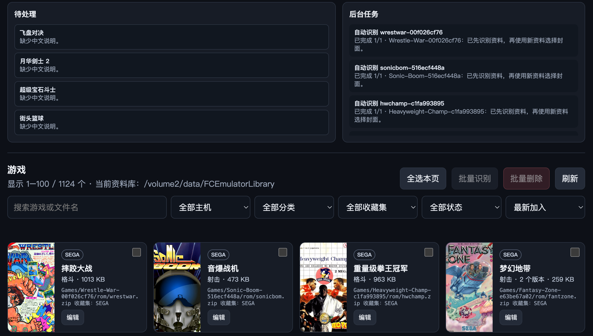

WINDOWS · MACOS · LINUX · SYNOLOGY
把资料库，
放在自己的设备。
FC Emulator Library Server 用来整理 ROM、游戏资料、封面与合集，并向 Apple TV 提供你自己的远程资料库。

服务器端资料库管理页面
INSTALLATION
普通电脑，
四步完成安装。
- 01
安装 Docker
Windows 与 macOS 安装 Docker Desktop；Linux 安装 Docker Engine 与 Compose 插件。
- 02
解压并选择资料库
下载并解压 ZIP，创建其中的
library文件夹；也可按 README 把现有资料库路径写入.env。 - 03
启动服务
在解压目录运行
docker compose up -d --build，再打开http://127.0.0.1:8282/。 - 04
安全开放给 Apple TV
先启用管理 Token，再将
FC_LIBRARY_BIND_IP改为电脑的局域网 IP；不要进行公网端口转发。
SYNOLOGY DSM 7
群晖继续使用原生 SPK。
- 01
在套件中心安装 Node.js 18、20 或 22。
- 02
进入「手动安装」，选择本页下载的 SPK。
- 03
为系统内部用户
FCEmulatorLibrary授予资料库读写权限。 - 04
启动后访问
http://NAS_IP:8282/完成设置。
YOUR FILES, YOUR CONTROL
安装包不附带游戏与 BIOS。
Docker ZIP 与群晖 SPK 都不包含 ROM、CPS2 key，也不包含 neogeo.zip BIOS。CPS2 游戏需要在你自己的 ROM ZIP 中提供匹配的 .key；Neo Geo BIOS 需由你在管理页面上传自有的 neogeo.zip。
Docker 包默认仅绑定本机地址，并以非 root、只读根文件系统运行。ROM、封面和资料库索引只写入你明确挂载或授权的目录。请只使用你有权使用的内容。